Learning-to-rank:
Deep, fast, precise - choose any two
Grebennikov Roman | DeliveryHero SE
This is me

- Long ago: PhD in CS, quant trading, credit scoring
- Past: Search & personalization for ~7 years
- Now:
UnemployedOpen-source contributor
RANKING
Not [only] about search
Not [only] about e-commerce
Not [only] static
Learn-to-rank?
why so special? how it's different?
- LTR TLDR: predicting next click
- Wait, is it a binary classification problem?
Ranking as a binary classification?
- Input: price/color/platform/clicks
- Output: click probability

Position matters
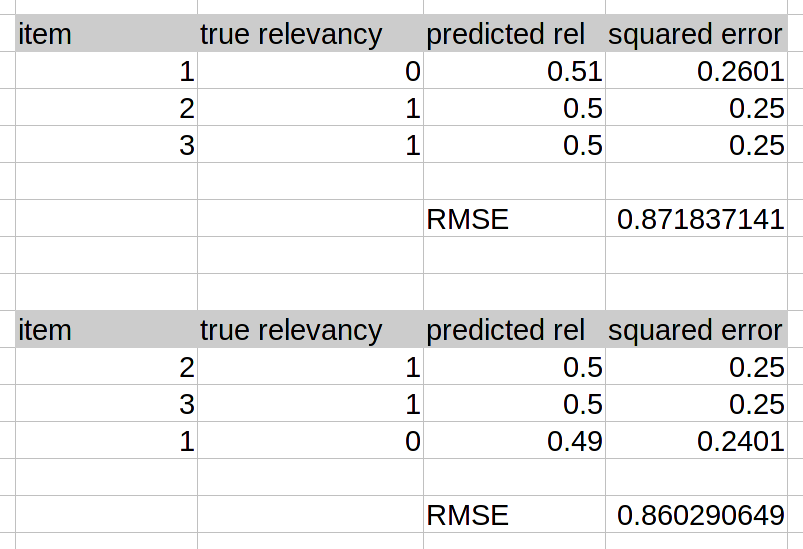
- Slight change in prob -> slight change in RMSE
- Completely different ranking
Position matters
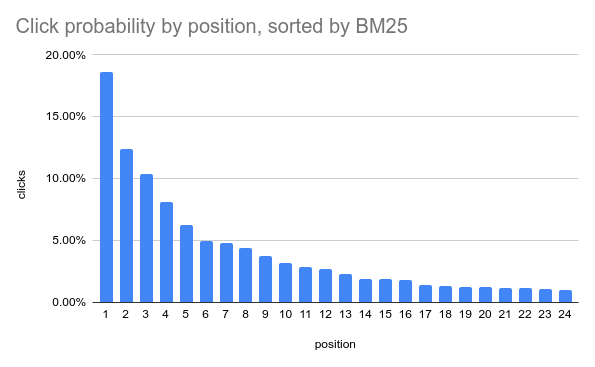- Human behavior - a root factor
source: MSRD [Movie Search Ranking Dataset], github.com/metarank/msrd
Cascade click model
Human behavior as seen by machine
- Start from the first document
- Examine docs one by one
- If click, then stop
- Otherwise, continue
https://clickmodels.weebly.com/uploads/5/2/2/5/52257029/russir2016-clickmodels-lecture1.pdf
Cascade model TLDR
- Click prob #N depends on #N-1
- The lower we go, the lower the prob
NDCG metric
- Cumulative gain, CG: sum of relevances
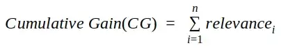 - Discounded CG: weight by position
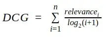 - Normalized DCG: fit to 0..1
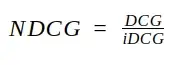
Understanding NDCG
- Perfect ranking: NDCG=1.0
- Worst possible ranking: NDCG=0.0
- Normal range: 0.5-0.8
- Implicit judgments: click=1, cart=3, purchase=10
NDCG instead of RMSE?
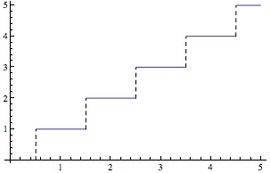- NDCG is not smooth - no gradient
- Gradient descent without gradient?
LambdaMART’s ‘one neat trick’
D. Turnbull: How lambdaMART works
LambdaMART implementations
- XGBoost: objective=rank:pairwise
- LightGBM: objective=lambdarank
- CatBoost: NDCG
LambdaMART everything!
But what about latency?
LambdaMART in the wild
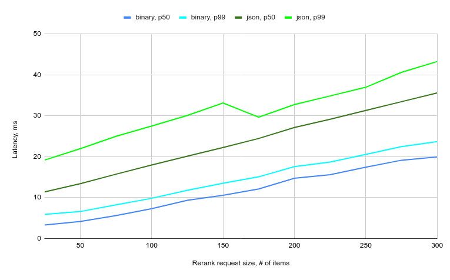
- 150 items = 10ms
- 300 items = 20ms
- ...
- 3000 items = 200ms???
LambdaMART vs DNN
- LMART is iterative and CPU
- ApproxNDCG: Tensorflow-Ranking, RAX
but why do you need to choose?
deep | fast | precise
- Deep+fast (but bad): BM25 in ElasticSearch
- Deep+precise (but slow): rank everything with LambdaMART
- Fast+precise (but not deep): multi-phase ranking
LTR: a high risk investment
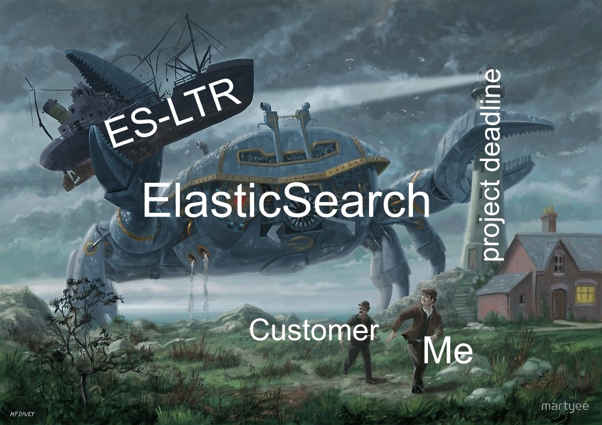- team: ML/MLops experience
- time: 6+ months, not guaranteed to succeed
- tooling: custom, in-house
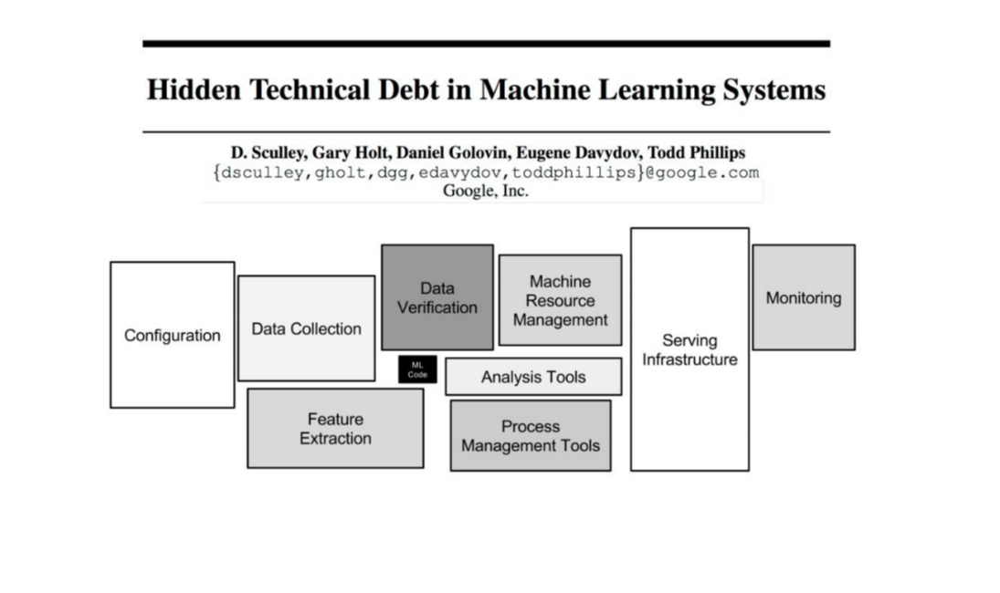
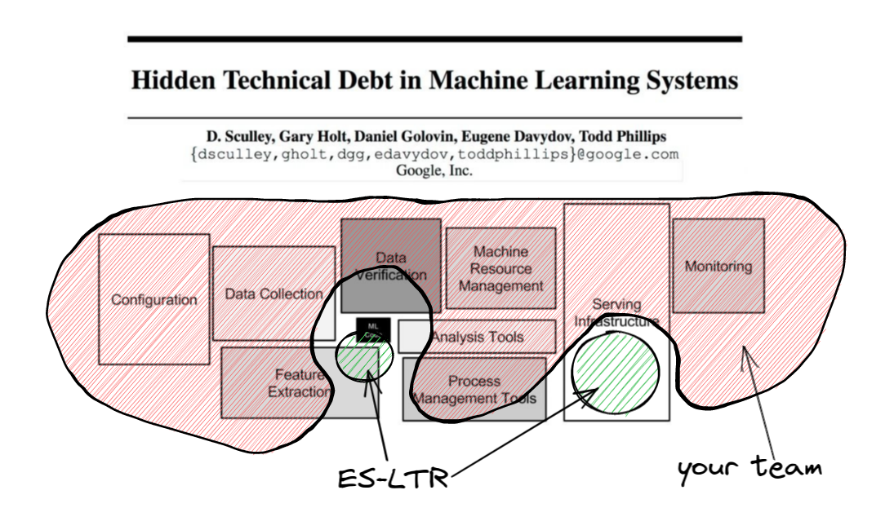
Are my ranking factors unique?
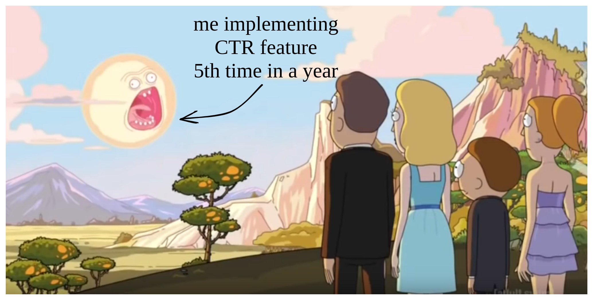
- UA, Referer, GeoIP
- query-field matching, item metadata
- counters, CTR, visitor profile
Is my data setup unique?
- data model: clicks, impressions, metadata
- feature engineering: compute and logging
- feature store: judgement lists, history replay, bootstrap
- typical LTR ML models: LambdaMART
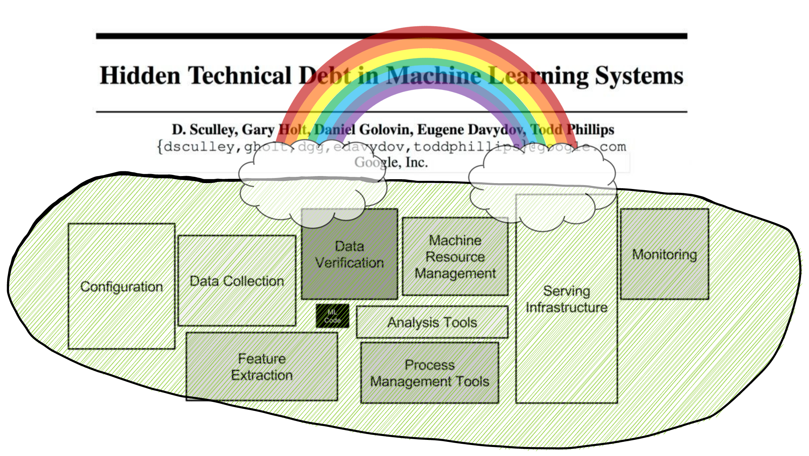
- cover 90% typical tasks in 10% time?
Metarank
a swiss army knife of re-ranking

A secondary re-ranker
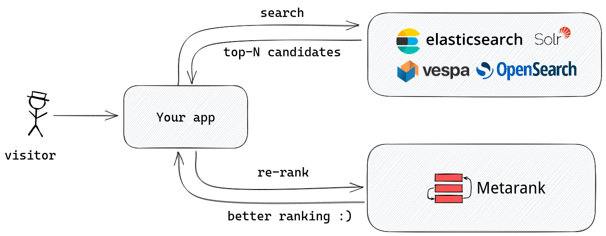Inside Metarank
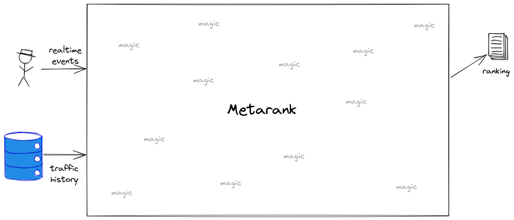Inside Metarank

Open Source

- Apache2 licensed, no strings attached
- Single jar file, can run locally
Data model
Inspired by GCP Retail Events, Segment.io Ecom Spec:
-
Metadata: visitor/item specific info
- item price, tags, visitor profile
-
Impression: visitor viewed an item list
- search results, collection, rec widget
-
Interaction: visitor acted on an item from the list
- click, add-to-cart, mouse hover
Document metadata example
{
"event": "item",
"id": "81f46c34-a4bb-469c-8708-f8127cd67d27",
"item": "product1",
"timestamp": "1599391467000",
"fields": [
{"name": "title", "value": "Nice jeans"},
{"name": "price", "value": 25.0},
{"name": "color", "value": ["blue", "black"]},
{"name": "availability", "value": true}
]
}
- Unique event id, item id and timestamp
- Optional document fields
- Partial updates are OK
Ranking event example
{
"event": "ranking",
"id": "81f46c34-a4bb-469c-8708-f8127cd67d27",
"timestamp": "1599391467000",
"user": "user1",
"session": "session1",
"fields": [
{"name": "query", "value": "socks"}
],
"items": [
{"id": "item3", "relevancy": 2.0},
{"id": "item1", "relevancy": 1.0},
{"id": "item2", "relevancy": 0.5}
]
}
- User & session fields
- Which items were displayed, BM25 score
Interaction event example
{
"event": "interaction",
"id": "0f4c0036-04fb-4409-b2c6-7163a59f6b7d",
"impression": "81f46c34-a4bb-469c-8708-f8127cd67d27",
"timestamp": "1599391467000",
"user": "user1",
"session": "session1",
"type": "purchase",
"item": "item1",
"fields": [
{"name": "count", "value": 1},
{"name": "shipping", "value": "DHL"}
],
} - Multiple interaction types: likes/clicks/purchases
- Must include reference to a parent ranking event
Demo: ranklens dataset
No-code YAML feature setup
Goal: cover 90% most common ML features
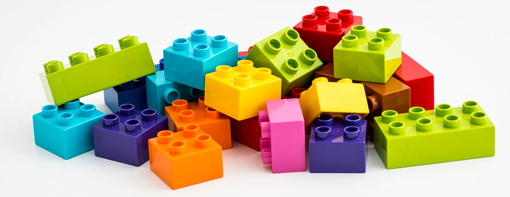- feature extractors: compute ML feature value
- feature store: add to changelog if changed
- online serving: cache latest value for inference
Feature extractors: basic
// take a value from item metadata
- name: budget
type: number
scope: item
source: item.budget
ttl: 60 days
Feature extractors: basic
// one-hot/label encode a string
- name: genre
type: string
scope: item
source: item.genre
values:
- comedy
- drama
- action
Special transformations
// index encode mobile/desktop/tablet category
// from User-Agent field
- name: platform
type: ua
field: platform
source: ranking.ua
- There should be a User-Agent field present in ranking event
Counters
// count how many clicks were done on a product
- name: click_count
type: interaction_count
scope: item
interaction: click
- Uh-oh, there shouldn't be a global counter!
More counters!
// A sliding window count of interaction events
// for a particular item
- name: item_click_count
type: window_count
interaction: click
scope: item
bucket_size: 24h // make a counter for each 24h rolling window
windows: [7, 14, 30, 60] // on each refresh, aggregate to 1-2-4-8 week counts
refresh: 1h
Rates: CTR & Conversion
// Click-through rate
- name: CTR
type: rate
top: click // divide number of clicks
bottom: impression // to number of examine events
scope: item
bucket: 24h // aggregate over 24-hour buckets
periods: [7, 14, 30, 60] // sum buckets for multiple time ranges
- Rate normalization: 1 click + 2 impressions != CTR 50%
Profiling
// Does this user had an interaction before
// with other item with the same field value?
- name: clicked_actor
type: interacted_with
interaction: click
field: metadata.actor
scope: user
Per-field matching
- name: title_match
type: field_match
itemField: item.title
rankingField: ranking.query
method:
type: ngram
n: 3
- Lucene language-specific tokenization is supported
Demo: ranklens config
Demo: import and training the model
What has just happened?
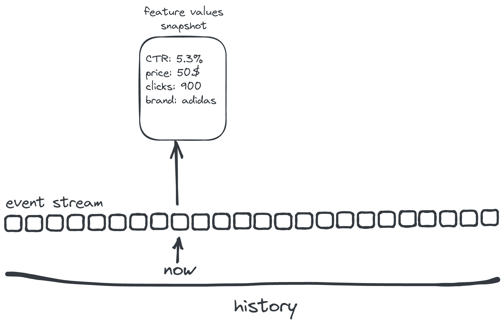
What has just happened?
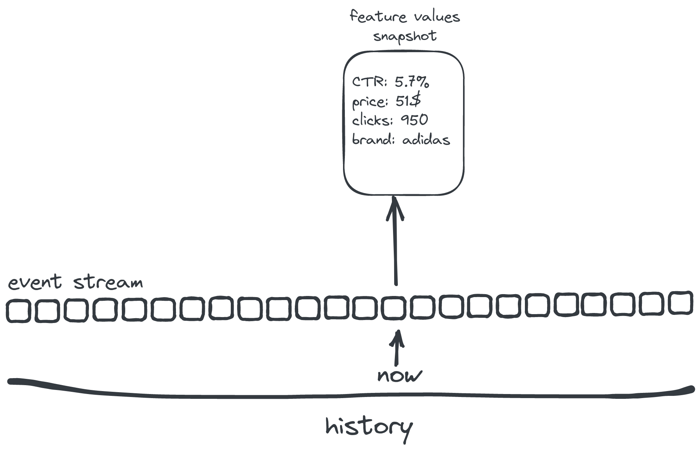
What has just happened?
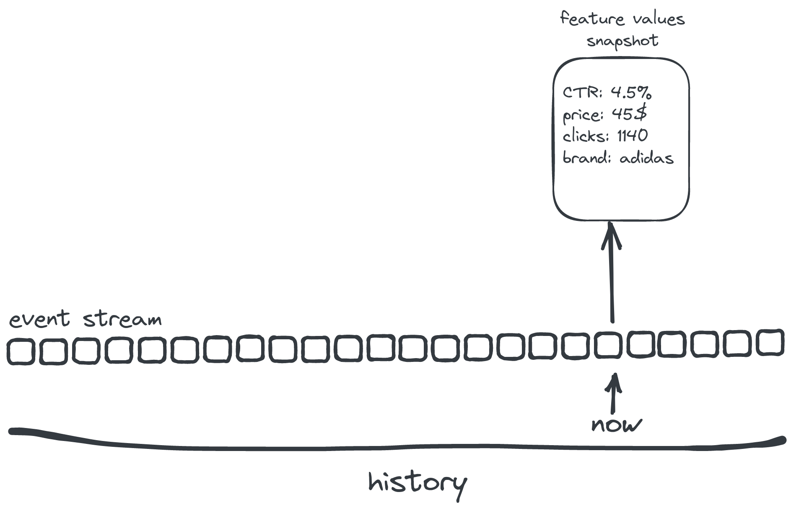
What has just happened?
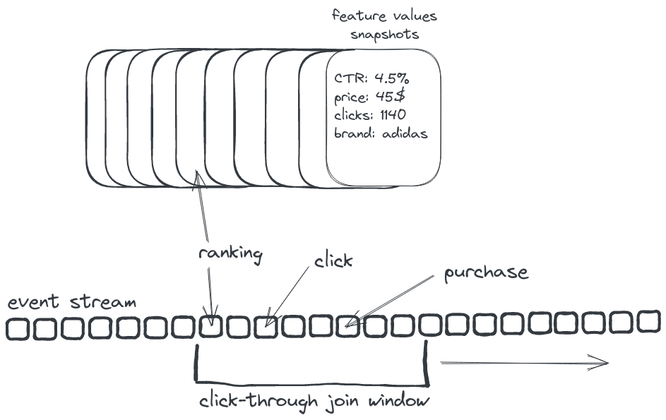
Implicit judgements
- Feed all of them into LambdaMART
Demo: sending requests
[not only] personalization
- Demo: interacted_with dynamic features ⇒ dynamic ranking
- Pilot: static features ⇒ precomputed ranking
[not only] reranking
- soon: recommendations retrieval (MF/BPR/ALS)
- soon: merchandising
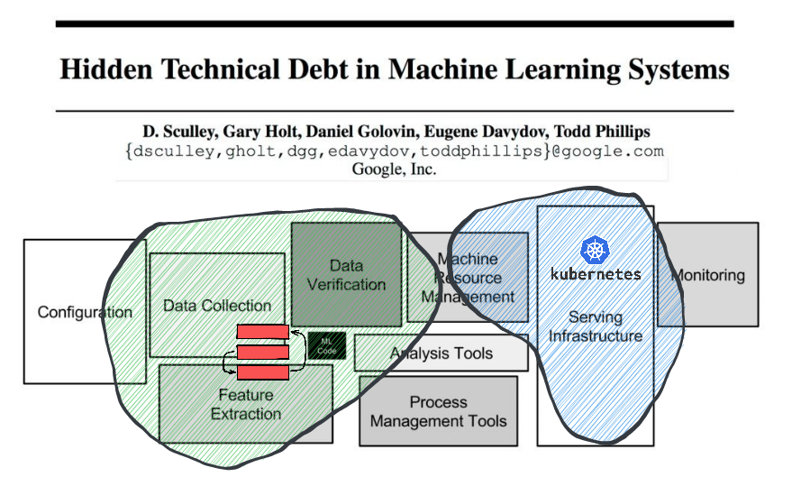
- Data collection: event schema, kafka/kinesis/pulsar connectors
- Verification: validation heuristics
- ML Code: LambdaMART now, more later
- Feature extraction: manual & automatic f. engineering
Current status
- Not MVP: running in prod in pilot projects
- k8s distributed mode, snowplow integration
- A long backlog of ML tasks: click models, LTR, de-biasing
We built Metarank to solve our problem.
But it may be also useful for you- Looking for feedback: what should we do next?
- Your unique use-case: what are we doing wrong?
Metarank
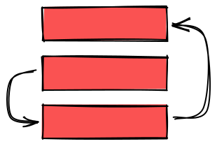
Links
- Slides: metarank.github.io/datatalks-ltr-talk
- How LambdaMART works: softwaredoug.com/blog/2021/11/28/how-lammbamart-works.html
- Learning to rank with LambdaMART: github.com/sophwats/XGBoost-lambdaMART